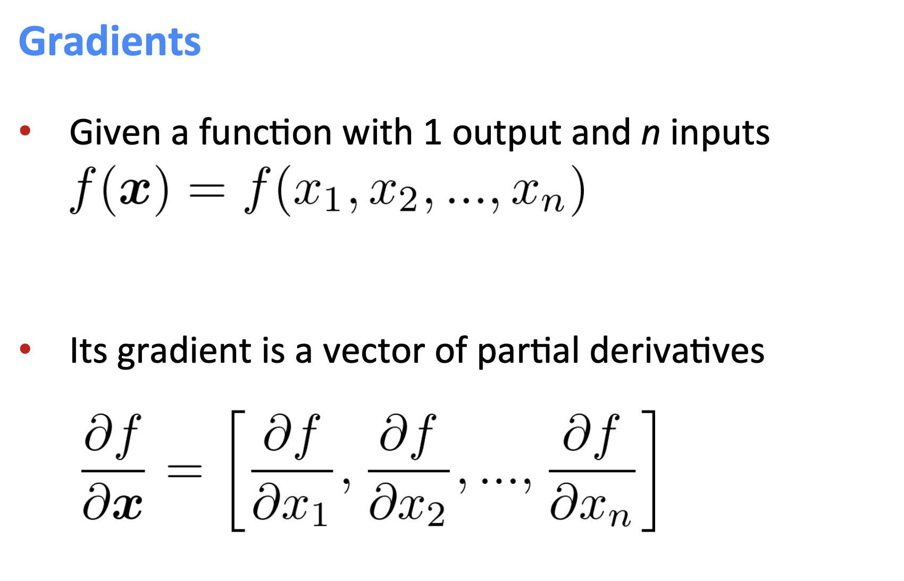
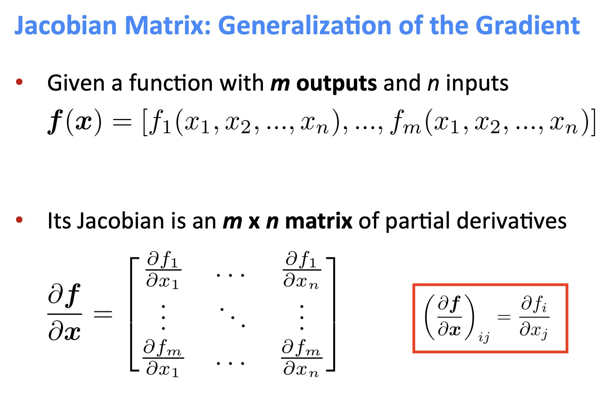
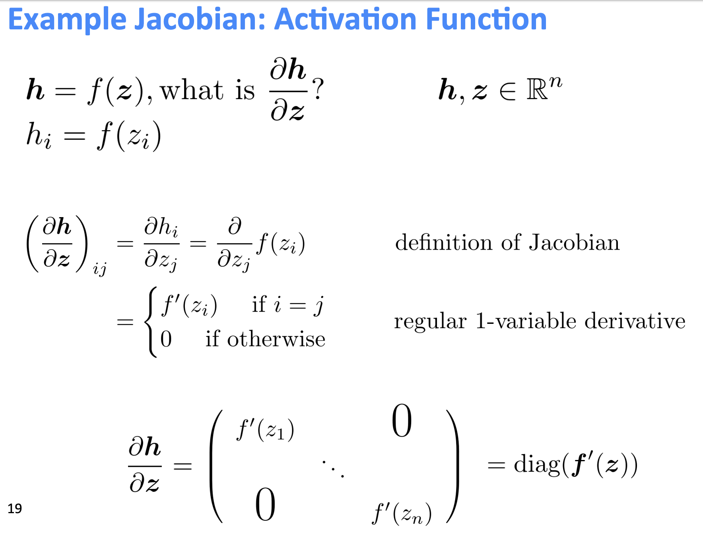
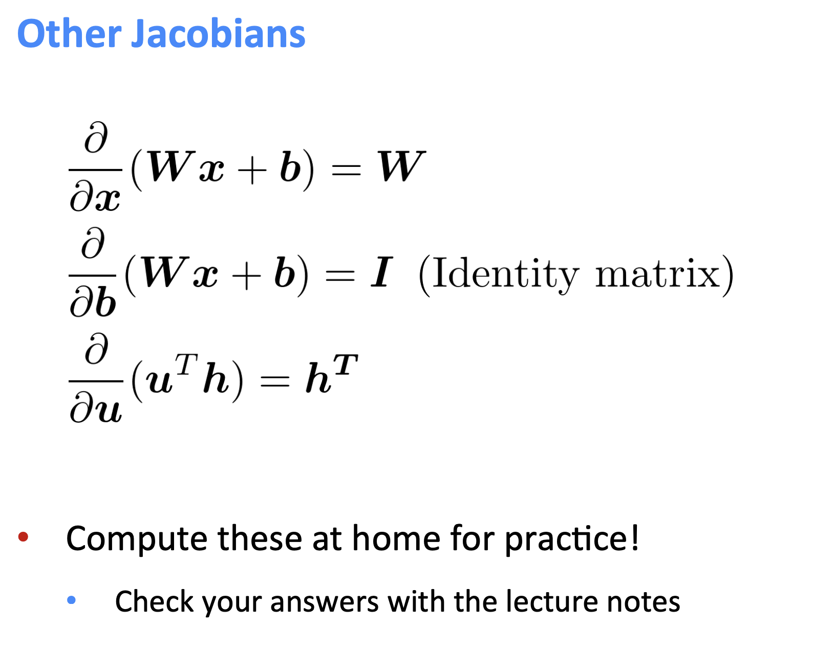
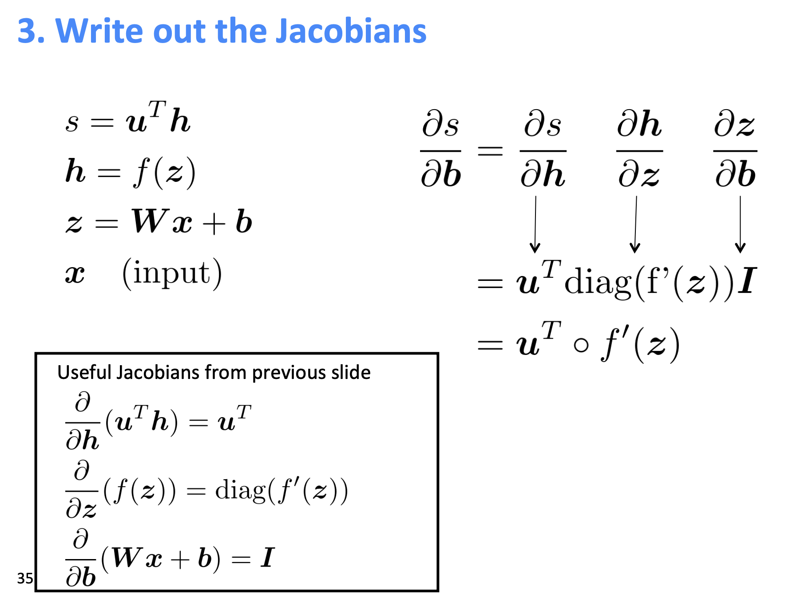
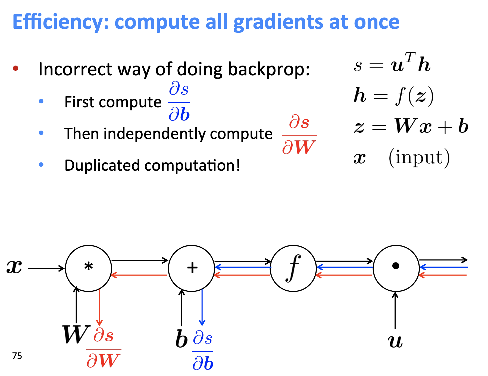
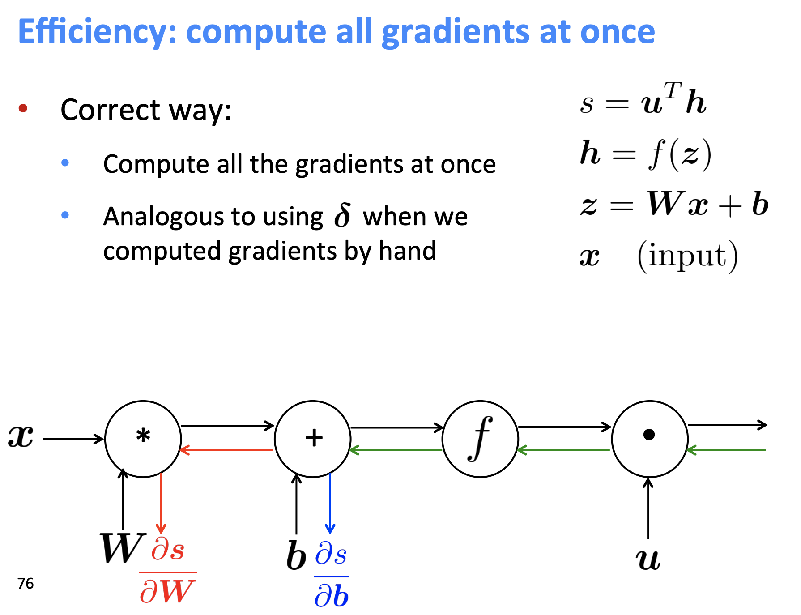
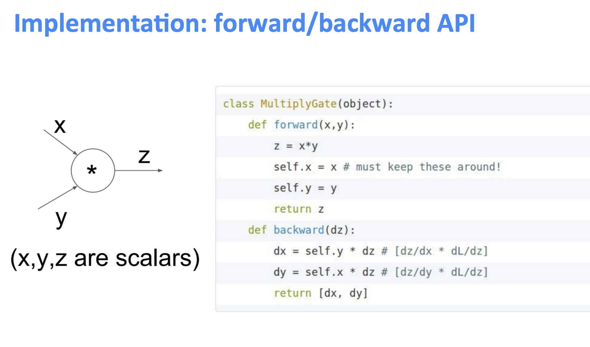
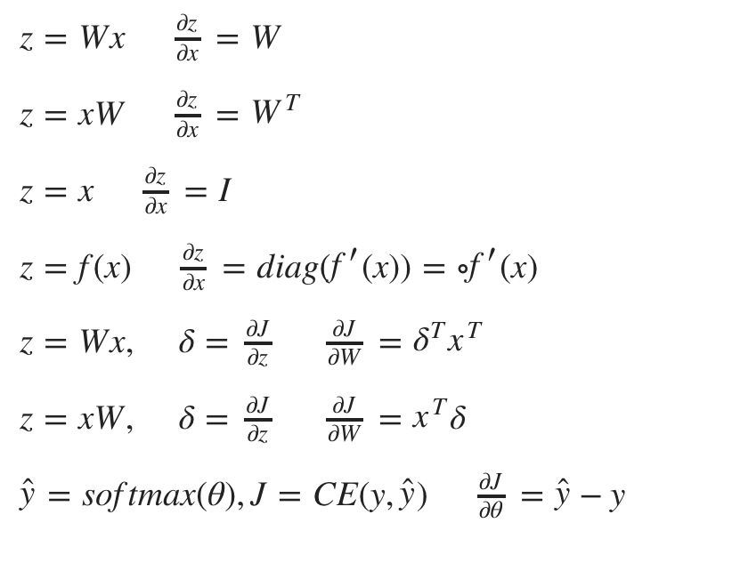

useful jacobians equations 发表于 2018-12-07 | | 阅读次数 有用的jacobians求导 复杂一点  example：  非常常用的，要记住，并且要自己推出来：  应用到神经网络上：  重要知识点：重复计算问题，由于我们的gradient是使用图来存储计算，我们需要把中间变量存起来： 错误的梯度计算：  正确的梯度计算：  所以在代码实现时把gradient都存起来：  对神经网络求导时一些非常有用的式子： 